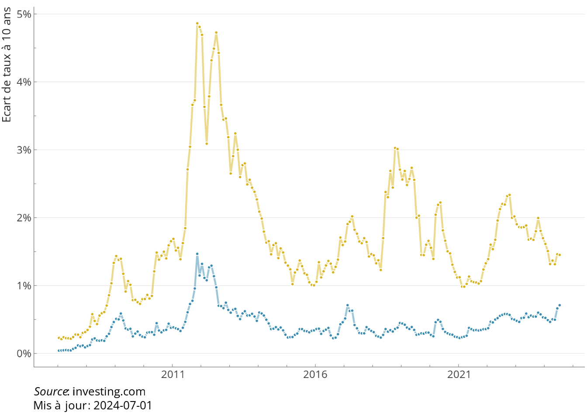
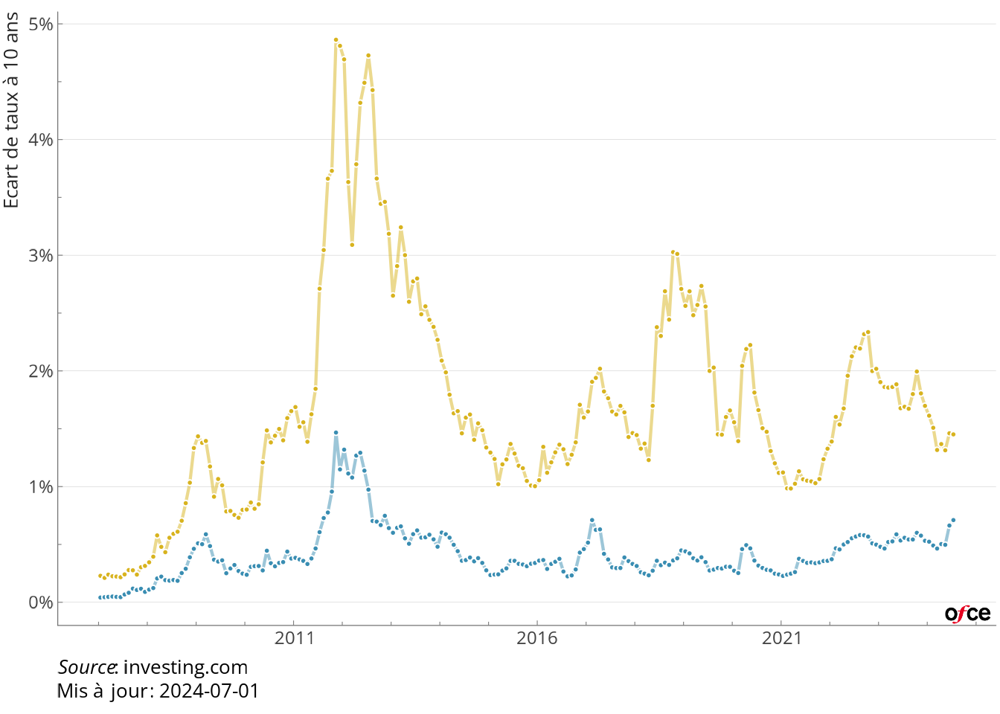

dates <- c(2023, 2024, 2025)
as.Date(as.character(dates), format = "%Y")[1] "2023-07-08" "2024-07-08" "2025-07-08"[1] "2023-01-01" "2024-02-01" "2025-03-01"Pour les séries temporelles, il y a deux recommandations pour les données :
utilisez le format long pour le graphique. Il peut être plus simple pour calculer des taux de croissance ou des ratios de passer en format large, mais c’est mieux de passer en format long pour la partie graphique, avec une ou plusieurs colonnes pour différencier les lignes. Cela permettra d’associer une couleur à chaque série et une facette à chque pays par exemple.
le champ décrivant les dates doit être en type date. ce n’est pas toujours évident quand les séries sont à fréquence annuelle, mais c’est très utile pour mélanger des séries de fréquence irrégulière, pour homogénéiser l’aspect des axes de dates ert mieux maîtriser le formatage des dates. Pour convertir une date en date, soit elle est au format charactere et de type “2022-12-01” et la fonction base::as.Date() fonctionne très bien. Sinon, pur les autres cas, le package lubridate (formation R niv. 1) est très pratique et dispose de plein de fonctions permettant d’absorber beaucoup de cas (les fonctions sont par exemple lubridate::ymd lubridate::dmy lubridate::my etc…).
dates <- c(2023, 2024, 2025)
as.Date(as.character(dates), format = "%Y")[1] "2023-07-08" "2024-07-08" "2025-07-08"[1] "2023-01-01" "2024-02-01" "2025-03-01"Prenons l’exemple du graphiques sur les spreads (legislatives2024, Blot Gerrolf Plane). Les données sont égénrées par un scrapping sur investing.com (en attendant une solution API sur une banque de données bien faite). Les données se présentent sous la forme.
── Attaching core tidyverse packages ──────────────────────── tidyverse 2.0.0 ──
✔ dplyr 1.1.4 ✔ readr 2.1.5
✔ forcats 1.0.0 ✔ stringr 1.5.1
✔ ggplot2 3.5.1 ✔ tibble 3.2.1
✔ lubridate 1.9.3 ✔ tidyr 1.3.1
✔ purrr 1.0.2
── Conflicts ────────────────────────────────────────── tidyverse_conflicts() ──
✖ dplyr::filter() masks stats::filter()
✖ dplyr::lag() masks stats::lag()
ℹ Use the conflicted package (<http://conflicted.r-lib.org/>) to force all conflicts to become errors
spreads# A tibble: 10,117 × 3
date pays taux
<date> <chr> <dbl>
1 2007-01-02 spreadfra 0.0130
2 2007-01-03 spreadfra 0.0360
3 2007-01-04 spreadfra 0.0280
4 2007-01-05 spreadfra 0.0190
5 2007-01-08 spreadfra 0.0440
6 2007-01-09 spreadfra 0.0430
7 2007-01-10 spreadfra 0.0290
8 2007-01-11 spreadfra 0.0370
9 2007-01-12 spreadfra 0.0340
10 2007-01-15 spreadfra 0.0380
# ℹ 10,107 more rowsLe fichier est au format long (avec deux modalités pour pays), les dates sont au format <date>, donc tout va presque bien. La colonne pays est un peu brute. On la transforme pour avoir un label plus propre et en facteur, pour contrôler l’ordre (on met France en premier, Italie en second). Il y a plusieurs méthodes pour arriver à ce résultat. Ici, on reste très simple parce qu’il n’y a que deux modalités. Si il y en avait plus de deux (et surtout un grand nombre, possiblement évolutif), on aurait fait quelques manipulations de chaînes et on aurait utilisé le package countrycode pour transformer les code pays en texte lisible, possiblement traduit dans différentes langues.
spreads <- spreads |>
mutate(pays = factor( pays, c("spreadfra", "spreadita"), c("France", "Italie")))
spreads# A tibble: 10,117 × 3
date pays taux
<date> <fct> <dbl>
1 2007-01-02 France 0.0130
2 2007-01-03 France 0.0360
3 2007-01-04 France 0.0280
4 2007-01-05 France 0.0190
5 2007-01-08 France 0.0440
6 2007-01-09 France 0.0430
7 2007-01-10 France 0.0290
8 2007-01-11 France 0.0370
9 2007-01-12 France 0.0340
10 2007-01-15 France 0.0380
# ℹ 10,107 more rowsLe graphique de base est alors simple à contruire. On utilise une couche geom_line et geom_point, une couche aes avec comme x les dates, y les taux et couleurs les pays. Pour geom_line, il faut préciser le groupe (cela peut paraître redondant, mais cela peut servir si on veut colorer en fonction d’une autre variable).
library(ofce)
cc <- PrettyCols::prettycols("Summer", n=2)
date_maj <- "2024-07-01"
main <- ggplot(spreads) +
aes(x=date, y=taux, color=pays, group=pays) +
geom_line(linewidth = 0.75, alpha = 0.5) +
geom_point(stroke = 0.1, size = 0.75)+
scale_color_manual(name = NULL, values = cc) +
labs(
y="Ecart de taux à 10 ans en %",
x=NULL,
caption="Source: investing.com") +
theme_ofce()+
guides(x = guide_axis(minor.ticks = TRUE),
y = guide_axis(minor.ticks = TRUE)) +
theme(legend.position = "none")+
labs(colour=NULL,
caption = glue::glue("*Source* : investing.com<br>Mis à jour : {date_maj}")) +
scale_x_date(labels = scales::label_date_short(format = c("%Y")),
date_breaks = "5 years")
mainWarning: Removed 858 rows containing missing values or values outside the scale range
(`geom_point()`).
On utilise la palette summer de PrettyCols (affaire de goût). On utilise la fonction theme_ofce() pour homogénéiser la présentation des graphiques. On précise les labels des axes inutile pour x, explicite pour y. Et la source, en notant que l’on peut utiliser markdown dans le texte de la source, ce qui permet de mettre Source en italique.
Le recours à scale_x_date permet de spécifier facilement le format des dates (avec la syntaxe de base::strptime()) et la fonction scale::label_date_short() permet un formatage élégant des dates (voir plus bas la partie insert).
On ajoute au graphique des annotations. C’est ici faid de façon laborieuse, on peut construire des fonctions (formation R niv. 2) ou utiliser esquisse ou {gganotate} mais ces deux solutions ont des défauts.
annotations <- list(
annotate(
"text", x = as.Date("2013-12-01"), y= 1,
label="France" , color=cc[[1]] , size=3, fontface ="bold"),
annotate(
"text", x = as.Date("2010-06-01"), y= 3 ,
label="Italie" , color=cc[[2]], size=3, fontface ="bold"),
annotate(
"text",
x = as.Date("2009-12-01"),
y= 5 ,
label="Crise des dettes souveraines\n26 juillet 2012 : Mario Draghi \n 'Whatever it takes'" ,
color= "grey33",
size=2,
hjust=1),
annotate(
"segment",
x = as.Date("2010-03-01"),
xend = as.Date("2011-07-01"),
y = 5,
yend = 4.6,
colour = "grey33",
linewidth=0.25,
arrow= arrow(length = unit(4, "point"))),
annotate(
"text",
x = as.Date("2017-9-01"),
y= 4.5 ,
size = 2,
label="4 mars 2018 : Élections italiennes\n1er juin : gouvernement de coalition" ,
color= "grey33"),
annotate(
"segment",
x = as.Date("2017-09-01"),
xend = as.Date("2018-05-01"),
y = 4.2,
yend = 3,
colour = "grey33",
linewidth=0.25,
arrow=arrow(length = unit(4, "point"))),
annotate(
"text",
x = as.Date("2022-01-01"),
hjust = 1,
y= 0.8,
label="Annonce de la dissolution" ,
color= "grey33",
size=2),
annotate(
"segment",
x = as.Date("2022-03-01"),
xend = as.Date("2024-04-01"),
y = 0.8,
yend = 0.7,
colour = "grey33",
linewidth=0.25,
arrow= arrow(length = unit(4, "point"))))
main + annotationsWarning: Removed 858 rows containing missing values or values outside the scale range
(`geom_point()`).
Le résultat est intéressant, mais le graphique a cependant un défaut, il y a trop de points, ce qui est du à la fréquence quotidienne et donc il perd en clarté. On va donc faire deux choses : réduire la fréquence en agrégeant les données par mois, puis on va ajouter un insert.
Pour construire les données à la fréquence mensuelle, on va créer un champ de date, mais retenant une seule date par mois (au milieu du mois).
dates <- spreads$date
lubridate::day(dates) <- 15
spreads_m <- spreads |>
mutate( date = dates) |>
group_by(date, pays) |>
summarize(taux_max = max(taux, na.rm=TRUE),
taux_min = min(taux, na.rm=TRUE),
taux = mean(taux, na.rm=TRUE))`summarise()` has grouped output by 'date'. You can override using the
`.groups` argument.
spreads_m# A tibble: 422 × 5
# Groups: date [211]
date pays taux_max taux_min taux
<date> <fct> <dbl> <dbl> <dbl>
1 2007-01-15 France 0.0580 0.0130 0.0409
2 2007-01-15 Italie 0.278 0.154 0.229
3 2007-02-15 France 0.0560 0.0380 0.0440
4 2007-02-15 Italie 0.284 0.17 0.211
5 2007-03-15 France 0.0630 0.0350 0.0466
6 2007-03-15 Italie 0.318 0.192 0.239
7 2007-04-15 France 0.0690 0.0410 0.0496
8 2007-04-15 Italie 0.285 0.153 0.225
9 2007-05-15 France 0.0980 0.0330 0.0464
10 2007-05-15 Italie 0.291 0.175 0.222
# ℹ 412 more rowsOn peut alors facilement modifier le graphique main en utilisant %+% (cette instruction modifie les données en entrée du graphique par le nouveau jeu de données qu’on vient de construire qui a exactement la même structure, comme on a utilisé les dates le passage du quotidien au mensuel se fait automatiquement, les axes sont parfaitement construits) :
main %+% spreads_m
L’insert est le même graphique, en enlevant les annotations, en simplifiant les axes et en zoomant sur les deux derniers mois.
inset <- ggplot(spreads) +
aes(x=date, y=taux, color=pays, group=pays) +
geom_vline(xintercept = as.Date("2024-06-09"),
linewidth = 0.1,
color = "grey50") +
geom_line( linewidth = 0.25, alpha=0.75) +
geom_point(stroke = 0.1, size = .75)+
guides(color = "none") +
scale_color_manual(name = NULL, values = cc) +
theme_ofce(base_size = 7,
axis.line.x = element_blank(),
axis.line.y = element_blank(),
plot.background = element_rect(fill = "white")) +
scale_x_date(labels = scales::label_date_short(format = c("%Y", "%B")),
date_breaks = "1 month",
limits = c(Sys.Date()-months(2), NA)) +
ylim(c(0, 2)) + xlab(NULL) +ylab(NULL)
insetWarning: Removed 10033 rows containing missing values or values outside the scale range
(`geom_line()`).Warning: Removed 10033 rows containing missing values or values outside the scale range
(`geom_point()`).
On l’insère dans le graphique principal en utilisant patchwork, ce qui donne le graphique, plus lisible et plus élégant.
library(patchwork)
main <- (main + annotations) %+% spreads_m
main + inset_element(inset, 0.75, 0.5, 1, 1)Warning: Removed 10033 rows containing missing values or values outside the scale range
(`geom_line()`).Warning: Removed 10033 rows containing missing values or values outside the scale range
(`geom_point()`).
La dernière étape est l’interctaivité. On utilise le package ggiraph qui va permettre d’intégrer des tooltips très simplement et très efficacement. On peut aussi avec des sélections dyanamiques ou encore des zooms.
Non mais ca va pas ?